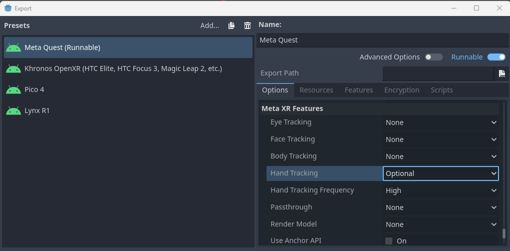
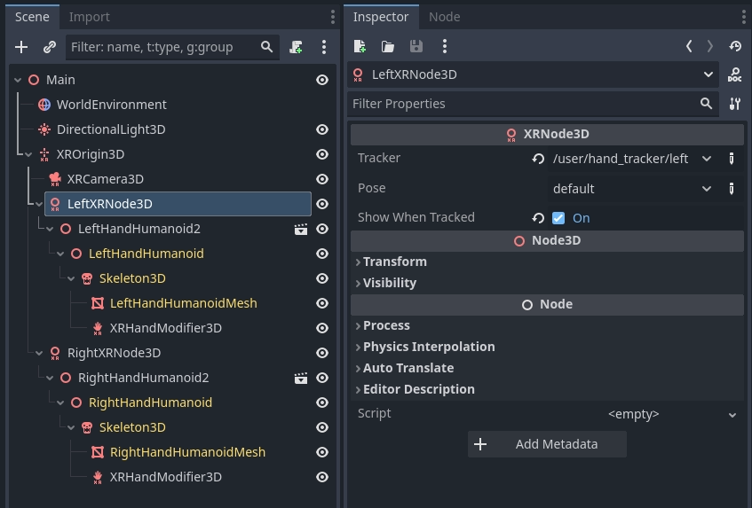
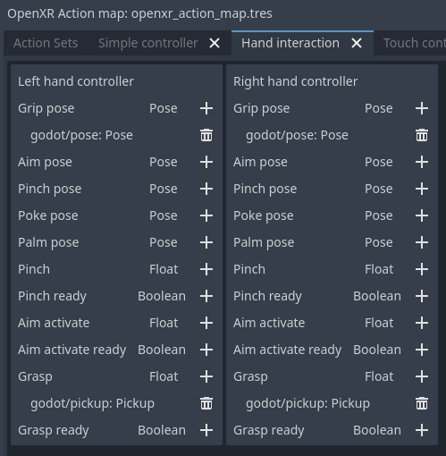
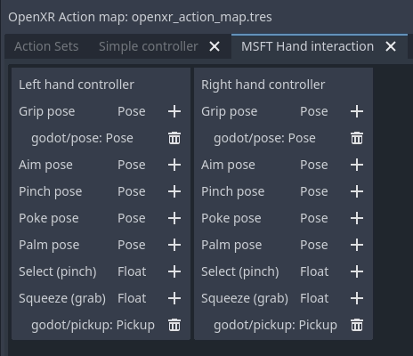
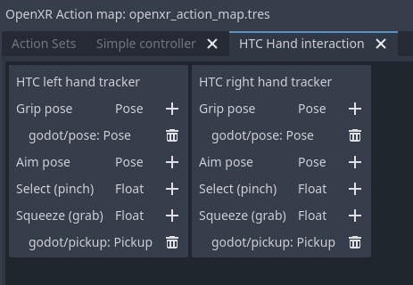

Theo dõi bàn tay (hand tracking) trong OpenXR
Giới thiệu
Ghi chú
Trang này tập trung cụ thể vào bộ tính năng được cung cấp qua OpenXR. Một phần chức năng trình bày ở đây cũng áp dụng cho WebXR và có thể được cung cấp bởi các giao diện XR khác.
Khi bàn về hand tracking, bạn cần biết rằng có những ý kiến khác nhau về việc nên vạch ranh giới ở đâu. Hệ quả thực tế là có sự khác biệt trong cách triển khai giữa các OpenXR runtime. Bạn có thể gặp tình huống phần cứng đã chọn không hỗ trợ một mảnh ghép nào đó, hoặc làm khác đủ nhiều so với các nền tảng khác đến mức bạn phải làm thêm việc.
Dù vậy, những cải tiến gần đây trong đặc tả OpenXR đang thu hẹp các khoảng cách này, và khi các nền tảng triển khai những cải tiến đó, chúng ta đang tiến gần hơn tới tương lai có được tính di động hoàn toàn giữa các nền tảng, hoặc ít nhất là một cách rõ ràng để phát hiện khả năng của một nền tảng.
Nhìn lại thời kỳ đầu của VR, các nền tảng lớn tập trung vào input dựa trên tay cầm được theo dõi. Ở đây, chúng ta theo dõi một thiết bị vật lý có thêm các nút để nhập liệu. Từ dữ liệu theo dõi, chúng ta có thể suy ra vị trí bàn tay của người chơi nhưng không biết thêm thông tin nào khác; theo truyền thống, việc triển khai cơ chế hiển thị bàn tay người chơi và tạo hoạt ảnh cho các ngón tay dựa trên input bổ sung từ tay cầm, dù là do nút được nhấn hay thông qua cảm biến tiệm cận, được để cho game tự làm. Các ngón tay cũng thường được đặt theo ngữ cảnh: người dùng đang cầm gì và đang thực hiện hành động gì.
Gần đây hơn, theo dõi bàn tay bằng quang học đã trở thành giải pháp phổ biến, trong đó camera theo dõi bàn tay người dùng và cung cấp đầy đủ dữ liệu theo dõi cho vị trí bàn tay và ngón tay. Nhiều nhà cung cấp coi việc này hoàn toàn tách biệt với theo dõi tay cầm và đưa ra các API độc lập để truy cập dữ liệu vị trí và hướng của bàn tay, ngón tay. Khi xử lý input, nhà phát triển game phải tự triển khai cơ chế nhận diện cử chỉ.
Sự phân tách này cũng tồn tại trong OpenXR, nơi theo dõi tay cầm chủ yếu được xử lý bởi hệ thống action map, còn theo dõi bàn tay quang học chủ yếu được xử lý bởi extension hand tracking API.
Tuy nhiên, thế giới không trắng đen rạch ròi như vậy, và chúng ta đang thấy nhiều tình huống vượt qua ranh giới này:
Các thiết bị thuộc cả hai loại, chẳng hạn như găng tay được theo dõi và những tay cầm như Index controller có khả năng theo dõi ngón tay.
Các XR runtime triển khai hand tracking suy luận từ dữ liệu tay cầm như một cách giải quyết việc đặt ngón tay đúng cho nhiều loại tay cầm.
Các ứng dụng XR muốn chuyển đổi liền mạch giữa theo dõi tay cầm và theo dõi bàn tay, mang lại cùng trải nghiệm người dùng bất kể cách tiếp cận nào được dùng.
OpenXR đáp ứng nhu cầu này bằng cách giới thiệu thêm các extension cho phép truy vấn khả năng của XR runtime/phần cứng hoặc bổ sung chức năng xuyên qua ranh giới này. Vấn đề hiện vẫn còn là mức độ áp dụng các extension này chưa đồng đều, nên một số nền tảng không báo cáo đầy đủ khả năng của mình. Vì vậy, bạn có thể cần kiểm tra các tính năng có sẵn trên phần cứng cụ thể và điều chỉnh cách tiếp cận cho phù hợp.
Dự án demo
Thông tin trên trang này đã được dùng để tạo một dự án demo mà bạn có thể tìm thấy tại đây.
Hand Tracking API
Như đã đề cập trong phần giới thiệu, hand tracking API chủ yếu được dùng với theo dõi bàn tay quang học và trên nhiều nền tảng chỉ hoạt động khi người dùng không cầm tay cầm. Một số nền tảng hỗ trợ hand tracking suy luận từ tay cầm, nghĩa là bạn vẫn nhận được dữ liệu hand tracking ngay cả khi người dùng đang cầm tay cầm. Điều này bao gồm SteamVR, Meta Quest (hiện chỉ trên bản native nhưng nhiều khả năng sẽ sớm hỗ trợ Meta Link), và hy vọng sớm có thêm các nền tảng khác.
Bản triển khai hand tracking trong Godot đã được chuẩn hóa xoay quanh Godot Humanoid Skeleton và hoạt động trên cả OpenXR lẫn WebXR. Do đó, hướng dẫn bên dưới sẽ dùng được trong cả hai môi trường.
Để dùng hand tracking API với OpenXR, trước tiên bạn cần bật nó. Việc này có thể thực hiện trong cài đặt dự án:
Với một số thiết bị XR độc lập (standalone), bạn cũng cần cấu hình extension hand tracking trong cài đặt export, ví dụ cho Meta Quest:

Giờ bạn cần thêm 3 thành phần vào scene cho mỗi bàn tay:
Một node được theo dõi để định vị bàn tay.
Một mesh bàn tay được skin đúng cách cùng skeleton.
Một skeleton modifier áp dụng dữ liệu theo dõi ngón tay lên skeleton.

Node hand tracking
Hệ thống hand tracking dùng các hand tracker riêng biệt để theo dõi vị trí bàn tay của người chơi trong không gian theo dõi.
Thông tin này được tách riêng cho các trường hợp sử dụng sau:
Việc theo dõi diễn ra trong không gian cục bộ của node XROrigin3D. Node này phải là con của node XROrigin3D để được đặt đúng vị trí.
Node này có thể được dùng làm mục tiêu IK khi dùng mesh thân trên có tay thay vì các mesh bàn tay riêng biệt.
Vị trí thực tế của bàn tay có thể chỉ gắn lỏng lẻo với dữ liệu theo dõi trong các tình huống như UI tạo avatar, gương giả hoặc các trường hợp tương tự, khiến mesh bàn tay và dữ liệu theo dõi ngón tay được đặt ở nơi khác.
Chúng ta sẽ chỉ tập trung vào trường hợp sử dụng đầu tiên.
Để làm việc này, bạn cần thêm một node XRNode3D vào node XROrigin3D.
Trên node này,
trackercần được đặt thành/user/hand_tracker/lefthoặc/user/hand_tracker/righttương ứng cho tay trái hoặc tay phải.
posenên được giữ làdefault, không lựa chọn nào khác hoạt động ở đây.Ô đánh dấu
Show When Trackedsẽ tự động ẩn node này nếu không có dữ liệu theo dõi, hoặc hiển thị node nếu có dữ liệu theo dõi.
Mesh bàn tay đã rig
Để hiển thị bàn tay, chúng ta cần một mesh bàn tay được rig và skin đúng cách. Để làm việc này, Godot dùng cấu trúc xương bàn tay như được định nghĩa cho Godot Humanoid, nhưng có thể hỗ trợ thêm một xương đầu ngón (tip bone) cho mỗi ngón tay.
Demo hand tracking OpenXR có chứa các tệp glTF mẫu của bàn tay đã được rig đúng cách.
Chúng ta sẽ dùng các tệp đó ở đây và thêm chúng làm con của node XRNode3D. Chúng ta cũng cần bật editable children để truy cập node Skeleton3D.
Skeleton modifier cho bàn tay
Cuối cùng, chúng ta cần thêm một node XRHandModifier3D làm con của node Skeleton3D. Node này sẽ lấy dữ liệu theo dõi ngón tay từ OpenXR và áp dụng nó lên mô hình bàn tay.
Bạn cần đặt thuộc tính Hand Tracker thành /user/hand_tracker/left hoặc /user/hand_tracker/right tùy theo việc chúng ta áp dụng dữ liệu theo dõi của tay trái hay tay phải.
Bạn cũng có thể đặt chế độ Bone Update trên node này.
Fulláp dụng đầy đủ dữ liệu hand tracking. Điều này có nghĩa là vị trí skeleton có thể phản ánh kích thước bàn tay thật của người dùng. Việc này có thể gây hiệu ứng co rúm nếu mesh không được gán trọng số (weight) đúng cách để tính đến điều này. Hãy chắc chắn bạn kiểm thử game với người chơi có đủ mọi kích cỡ khi dùng theo dõi bàn tay quang học!
Rotation Onlychỉ áp dụng phép xoay lên các xương bàn tay và giữ nguyên độ dài xương. Ở chế độ này, kích thước mesh bàn tay không thay đổi.
Sau khi thêm những thứ này, khi chạy dự án, chúng ta sẽ thấy bàn tay hiển thị đúng nếu hand tracking được hỗ trợ.
Nguồn dữ liệu hand tracking
Đây là một extension của OpenXR cung cấp thông tin về nguồn của dữ liệu hand tracking. Hiện chỉ một vài runtime triển khai nó, nhưng nếu có sẵn, Godot sẽ kích hoạt nó.
Nếu extension này không được hỗ trợ và do đó trả về unknown, bạn có thể đưa ra các giả định sau:
Nếu bạn dùng SteamVR (bao gồm Steam link), chỉ hand tracking dựa trên tay cầm được hỗ trợ.
Với mọi runtime khác, nếu hand tracking được hỗ trợ thì chỉ hand tracking quang học được hỗ trợ (Lưu ý: Meta Link hiện thuộc nhóm này).
Trong mọi trường hợp khác, hoàn toàn không hỗ trợ theo dõi bàn tay.
Bạn có thể truy cập thông tin này thông qua code:
var hand_tracker : XRHandTracker = XRServer.get_tracker('/user/hand_tracker/left')
if hand_tracker:
if hand_tracker.has_tracking_data:
if hand_tracker.hand_tracking_source == XRHandTracker.HAND_TRACKING_SOURCE_UNKNOWN:
print("Hand tracking source unknown")
elif hand_tracker.hand_tracking_source == XRHandTracker.HAND_TRACKING_SOURCE_UNOBSTRUCTED:
print("Hand tracking source is optical hand tracking")
elif hand_tracker.hand_tracking_source == XRHandTracker.HAND_TRACKING_SOURCE_CONTROLLER:
print("Hand tracking data is inferred from controller data")
else:
print("Unknown hand tracking source ", hand_tracker.hand_tracking_source)
else:
print("Hand is currently not being tracked")
else:
print("No hand tracker registered")
Ví dụ này ghi log trạng thái của bàn tay trái.
Nếu trong ví dụ này get_tracker không trả về hand tracker nào, điều đó có nghĩa là XR runtime hoàn toàn không hỗ trợ API theo dõi bàn tay.
Nếu có tracker nhưng has_tracking_data là false, thì bàn tay của người dùng hiện không được theo dõi. Điều này có thể do một trong các nguyên nhân sau:
Bàn tay của người chơi không nằm trong tầm nhìn của bất kỳ camera theo dõi nào trên headset
Người chơi đang dùng controller trong khi headset chỉ hỗ trợ theo dõi bàn tay bằng quang học
Controller đang tắt trong khi chỉ hỗ trợ theo dõi bàn tay qua controller.
Xử lý đầu vào của người dùng
Nếu dùng controller, việc phản hồi các hành động của người dùng được xử lý thông qua XR action map. Trong action map, bạn có thể ánh xạ nhiều loại đầu vào khác nhau như cò (trigger) hoặc joystick trên controller vào một action. Action này sau đó có thể điều khiển logic trong game của bạn.
Ban đầu, khi dùng theo dõi bàn tay, chúng ta không có những đầu vào như vậy; đầu vào được điều khiển bằng các cử chỉ của người dùng, chẳng hạn nắm tay để cầm hoặc chụm ngón cái và ngón trỏ lại để chọn một thứ gì đó. Việc hiện thực điều này hoàn toàn do nhà phát triển game đảm nhận.
Nhận thấy nhu cầu ngày càng tăng đối với các ứng dụng có thể chuyển đổi liền mạch giữa controller và theo dõi bàn tay, cũng như nhu cầu về một dạng khả năng đầu vào cơ bản, một số extension đã được bổ sung vào đặc tả, cung cấp khả năng nhận dạng cử chỉ cơ bản và có thể dùng cùng action map.
Hand interaction profile
Hand interaction profile extension là một core extension mới, hỗ trợ các cử chỉ chụm (pinch), nắm (grasp), chọc (poke) và các pose liên quan. Hiện extension này vẫn còn ít được hỗ trợ nhưng sẽ sớm có mặt trên nhiều runtime hơn trong tương lai gần.

Cử chỉ chụm được kích hoạt khi bạn chụm ngón cái và ngón trỏ lại với nhau. Cử chỉ này thường được dùng làm cử chỉ chọn cho hệ thống menu, tương tự như dùng controller chỉ vào một đối tượng rồi bấm cò để chọn, và vì thế thường được ánh xạ như vậy.
pinch poselà một pose nằm ở giữa đầu ngón cái và đầu ngón trỏ, được định hướng sao cho có thể dùng ray cast để xác định mục tiêu.Đầu vào float
pinchlà một giá trị trong khoảng từ 0.0 (đầu ngón cái và ngón trỏ tách rời) đến 1.0 (đầu ngón cái và ngón trỏ chạm nhau).Đầu vào
pinch readycó giá trị true khi các đầu ngón tay (gần như) chạm nhau.
Cử chỉ nắm được kích hoạt khi bạn nắm tay lại và thường được dùng để nhặt đồ vật, tương tự như sử dụng đầu vào squeeze trên controller.
Đầu vào float
grasplà một giá trị trong khoảng từ 0.0 (bàn tay mở) đến 1.0 (nắm tay).Đầu vào
grasp readycó giá trị true khi người dùng đã nắm tay lại.
Cử chỉ chọc được kích hoạt khi bạn duỗi ngón trỏ ra. Cử chỉ này hơi ngoại lệ vì pose ở đầu ngón trỏ thường được dùng để chọc vào một đối tượng có thể tương tác. poke pose là một pose nằm ở đầu ngón trỏ.
Cuối cùng, đầu vào aim activate (ready) được định nghĩa là đầu vào có giá trị 1.0/true khi ngón trỏ duỗi ra và chỉ vào một mục tiêu có thể kích hoạt. Các runtime diễn giải điều này như thế nào thì vẫn chưa rõ ràng.
Với thiết lập này, các tracker left_hand và right_hand thông thường được sử dụng, nhờ đó bạn có thể chuyển đổi liền mạch giữa đầu vào từ controller và từ theo dõi bàn tay.
Ghi chú
Bạn cần bật hand interaction profile extension trong cài đặt dự án OpenXR.
Microsoft hand interaction profile
Microsoft hand interaction profile extension do Microsoft giới thiệu và mô phỏng gần giống simple controller profile. Meta cũng đã bổ sung hỗ trợ cho extension này nhưng chỉ trên OpenXR client gốc của họ; hiện nó chưa khả dụng qua Meta Link.

Hỗ trợ chụm được cung cấp thông qua đầu vào select, có giá trị 0.0 khi đầu ngón cái và ngón trỏ tách rời và 1.0 khi chúng chạm nhau.
Lưu ý rằng trong profile này, aim pose được định nghĩa lại thành một pose nằm giữa ngón cái và ngón trỏ, được định hướng sao cho có thể dùng ray cast để xác định mục tiêu.
Hỗ trợ nắm được cung cấp thông qua đầu vào squeeze, có giá trị 0.0 khi bàn tay mở và 1.0 khi nắm tay lại.
Với thiết lập này, các tracker left_hand và right_hand thông thường được sử dụng, nhờ đó bạn có thể chuyển đổi liền mạch giữa đầu vào từ controller và từ theo dõi bàn tay.
HTC hand interaction profile
HTC hand interaction profile extension do HTC giới thiệu và được định nghĩa tương tự extension của Microsoft. Nó chỉ được HTC hỗ trợ trên các headset Focus 3 và Elite XR.

Xem Microsoft hand interaction profile để biết các cử chỉ được hỗ trợ.
Điểm khác biệt chính là extension này giới thiệu hai tracker mới, /user/hand_htc/left và /user/hand_htc/right. Điều đó có nghĩa là bạn cần hiện thực thêm logic để chuyển đổi giữa các tracker mặc định và các tracker riêng của HTC khi người dùng đặt controller xuống hoặc cầm controller lên.
Simple controller profile
Simple controller profile là một core profile tiêu chuẩn, được định nghĩa làm profile dự phòng khi sử dụng một controller chưa có profile nào.
Có một số OpenXR runtime sẽ mô phỏng controller thông qua simple controller profile khi dùng theo dõi bàn tay.
Đáng tiếc là không có cách nào đáng tin cậy để xác định đang dùng một controller không xác định hay đang có theo dõi bàn tay mô phỏng controller thông qua profile này.

Các XR runtime được tự do định nghĩa cách simple controller profile hoạt động, nên cũng không có gì chắc chắn về việc profile này được ánh xạ sang cử chỉ như thế nào.
Cách ánh xạ phổ biến nhất có vẻ là select click có giá trị true khi đầu ngón cái và ngón trỏ chạm nhau trong lúc lòng bàn tay hướng ra xa người dùng. menu click sẽ có giá trị true khi đầu ngón cái và ngón trỏ chạm nhau trong lúc lòng bàn tay hướng về phía người dùng.
Với thiết lập này, các tracker left_hand và right_hand thông thường được sử dụng, nhờ đó bạn có thể chuyển đổi liền mạch giữa đầu vào từ controller và từ theo dõi bàn tay.
Ghi chú
Vì một số interaction profile này chồng lấn nhau, điều quan trọng cần biết là bạn có thể thêm từng profile vào action map và XR runtime sẽ chọn profile phù hợp nhất.
Chẳng hạn, Meta Quest hỗ trợ cả Microsoft hand interaction profile lẫn simple controller profile. Nếu cả hai đều được khai báo, Microsoft hand interaction profile sẽ được ưu tiên và được sử dụng.
Dự kiến khi Meta hỗ trợ core hand interaction profile extension, profile đó sẽ được ưu tiên hơn cả Microsoft profile lẫn simple controller profile.
Đầu vào dựa trên cử chỉ
Nếu nền tảng không hỗ trợ interaction profile nào khi dùng theo dõi bàn tay, hoặc nếu bạn đang xây dựng ứng dụng cần hỗ trợ cử chỉ phức tạp hơn, bạn sẽ cần tự xây dựng hệ thống nhận dạng cử chỉ của riêng mình.
Bạn có thể lấy toàn bộ dữ liệu theo dõi bàn tay thông qua resource XRHandTracker cho từng bàn tay. Bạn có thể lấy hand tracker bằng cách gọi XRServer.get_tracker và dùng /user/hand_tracker/left hoặc /user/hand_tracker/left làm tracker. Resource này cung cấp quyền truy cập toàn bộ thông tin khớp (joint) của bàn tay tương ứng.
Việc trình bày chi tiết một thuật toán nhận dạng cử chỉ đầy đủ nằm ngoài phạm vi của tài liệu này, tuy nhiên có một số dự án cộng đồng bạn có thể tham khảo: